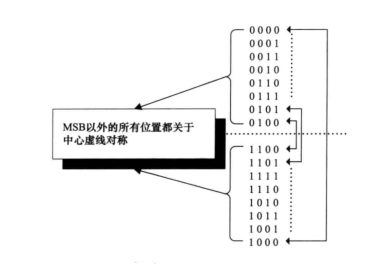

FIFO
本文最后更新于：2023年12月27日 上午
- 参考
- Clifford E. Cummings《Simulation_and_Synthesis_Techniques_for_Asynchrono.pdf》
- Vijay A. Nebhrajani《异步FIFO结构》
- 《硬件架构的艺术》
1. 关于FIFO
- FIFO不需要读写地址线，顺序写入顺序读出。只有读写指针。
- FIFO的深度确定
- 读的速度大于写的速度：FIFO的深度为1，也可以。因为瞬间就会被读走。
- 写的速度大于读的速度：FIFO的深度需要确保接收方未能将发送方发送的数据接收完毕的话，剩下的数据可以存储在FIFO内部而不会溢出。当发送结束后 接收方可以从容地接收剩下的数据。
- 同步 & 异步 FIFO
- 同步FIFO是指读写时钟为同一个时钟，在时钟沿到来时同时发生读写操作。
- 异步FIFO是指读写时钟不一致，两个时钟相互独立。
2. 同步FIFO
同步FIFO电路如下图所示。FIFO本质上是一个没有读写地址线的DPRAM。
在没有可以写的空间时，写指针等于RAM_SIZE-1.此时进行一个写操作时，会使写指针回滚到0，并将fifo_full信号拉高。如下图。
因此可以很清楚的看到，当读指针和写指针相等时，不是写满就是读空。可以采用下面增加1bit MSB算法检测满/空。
- 也可以采用计数器来持续计数FIFO内空满位置的个数，直接比较计数器的值判断。
- 但是该算法需要增加额外的硬件电路（比较器），尤其当FIFO深度增加时，宽度也增加。因此产生空满信号的比较器也需要更高级的序列比较器。导致FIFO的操作频率会被拉低。
3. 异步FIFO
3.1 异步FIFO电路结构
- 异步FIFO电路如下图所示。
当fifo_full被拉高时，不可以往FIFO写入数据，否则会将FIFO的数据覆盖掉。
当fifo_empty被拉高时，不应该读出数据，否则会读出垃圾数据。
3.2 同步指针
由于读写在两个时钟域，如果需要判断是否写满或读空，需要跨时钟传输。
如果采用同步电路，则至少需要两个触发器，在下面波形可以看到：rd_ptr_sync比rd_ptr要延后两个周期，导致即使FIFO已经未满了，但是由于延迟，仍认为其为满的，出现虚满情况。
同理，将写指针同步到读时钟域上也会导致最少两个读时钟的延迟，出现即使已经向里面写数据了，但仍判断为空，出现虚空情况。
- 对于数值连续的信号，可以采用格雷码进行传输，每次只翻转1bit，错误出现概率小。
3.3 满/空 判断方法
- 满/空 判断方法
- 读写地址比较
- 对于深度为2^N的FIFO，指针宽度设置为N+1.
- 当指针二进制码MSB不一致，而其它位数都相同时，则FIFO为满。
- 当指针二进制码所有都完全相同时，FIFO为空。
- 对于深度为2^N的FIFO，指针宽度设置为N+1.
- 实现电路结构如下图所示。采用的是3.2介绍的两级同步电路来解决跨时钟域的问题。
首先需要一个格雷码计数器，实现如下。
- 将格雷码转换为二进制。
- 根据条件递增二进制。
- 将二进制转为格雷码。
需要将格雷码计数器输出转二进制再送去比较器产生空/满信号。
FIFO的最大操作频率取决于格雷码计数器的速度。
- 也可以直接根据格雷码进行判断
判断空：所有bit全都相同。
判断满：同步后的读指针和写指针的前两bit MSB都为相反数，其余都匹配，那么为将满。
实现上面满逻辑的代码：
1
2
3
4
5
6
7
8
9
10wire rd_2nd_msb = rd_ptr_sync[SIZE] ^ rd_ptr_sync[SIZE-1];
wire wr_2nd_msb = wr_gtemp[SIZE] ^ wr_gtemp[SIZE-1];
always@(posedge clk or negedge nrst)
begin
if(!nrst)
fifo_full <= 1'b1;
else
fifo_full <= (wr_gtemp[SIZE] != rd_ptr_sync[SIZE]) && (rd_2nd_msb != wr_2nd_msb)
&& (wr_gtemp[SIZE-2:0] == rd_ptr_sync[SIZE-2:0]);
end电路结构如下所示。
- 读写地址比较
- 将满/将空状态产生
在Clifford E. Cummings的文章中提到了对将满/将空的判断算法。注意此算法比较的是格雷码。
假设FIFO 深度为16，按照最高两bit将FIFO的地址分为四部分，根据前两bit值的大小来生成 将满/将空 信号。
具体逻辑关系如下两张图的表达式。
第一张图的表达式检查读指针所在象限是否大于写指针一个象限的位置，说明写地址快要追上读地址，应拉高将满信号。
第二张图的表达式检查写指针所在象限是否大于读指针一个象限的位置，说明读地址快要追上写地址，应拉高将空信号。
至于为什么下图中
dirset_n和dirclr_n在判断逻辑之外还加了一个取反逻辑。- 可以参考 Cummings 论文中的结构，因为 direction 触发器的reset 和 clr 为低电平。
4. 格雷码
4.1 格雷码特点
- 顺序值变化时，只有1bit发生变化。
- 二进制：0111 -> 1000，所有bit都发生变化的情况。
- 格雷码：0101 -> 0100，这样只有1bit的变化。
- FIFO的读写指针定义为格雷码，有个局限点：深度只能定义为2^n，否则从FIFO底端地址到FIFO顶端地址就不止1bit变化了。

4.2 生成格雷码
- 直接排列
| 原始值 | 000 |
|---|---|
| 改变最右侧位元值 | 001 |
| 改变右起第一个为1的位元左边的位元 | 011 |
| 改变最右边的位元 | 010 |
| 改变右起第一个为1的位元左边的位元 | 110 |
| 改变最右边的位元 | 111 |
| 改变右起第一个为1的位元左边的位元 | 101 |
| 改变最右边的位元 | 100 |
- 镜射排列
| 产生0，1两个字符串 | 0 - 1 |
|---|---|
| 在第一步的基础上，正向每一个字符串都分别加0，然后反向迭代每个字符串加1 | 00 - 01-11-10 |
| 与上一步相同 | 000-001-011-010-110-111-101-100 |
4.3 格雷码 & 二进制 转换
- 二进制码转格雷码
- 保留格雷码的最高位作为二进制的最高位，次高位二进制为高位二进制与次高位格雷码相异或，其它自然二进制码与此类似。
- 二进制数： $B_{n-1}B_{n-2}....B_2B_1B_0 $
- 对应的格雷码：$G_{n-1}G_{n-2}...G_2G_1G_0 $
- 其中最高位保留：$G_{n-1} = B_{n-1} $
- 其它各位：\(G_i = B_{i+1}\bigoplus B_i\)
- 保留格雷码的最高位作为二进制的最高位，次高位二进制为高位二进制与次高位格雷码相异或，其它自然二进制码与此类似。
- 格雷码转二进制码
- 保留二进制码的最高位，次高位格雷码为二进制码的高位和次高位相异或。
- 格雷码：\(G_{n-1}G_{n-2}...G_2G_1G_0\)
- 对应的二进制数： \(B_{n-1}B_{n-2}....B_2B_1B_0\)
- 其中最高位保留：\(B_{n-1} = G_{n-1}\)
- 其它各位：\(B_{i} = G_{i}\bigoplus B_{i+1}\)
- 保留二进制码的最高位，次高位格雷码为二进制码的高位和次高位相异或。
4.4 格雷码计数器
3.3节中有介绍可以直接根据格雷码判断空满信号。但是，计数器仍需要将格雷码转为二进制码之后再递增，之后再转换为格雷码，仍会限制整体电路的速度。
在Clifford E. Cummings的文章中，提出了下面这种可以直接实现格雷码计数器的电路。
实现逻辑较为简单，代码如下：
1
2
3
4
5
6
7
8
9
10
11
12
13
14//以wptr为例，rptr与此相似
always @(posedge wclk or negedge rst_n) begin
if(!rst_n) begin
wbin <= 'd0;
wptr <= 'd0;
end
else begin
wbin <= wbnext;
wptr <= wgnext;
end
end
assign wbnext = !wfull ? wbin+winc : wbin;
assign wgnext = (wbnext>>1) ^ wbnext;